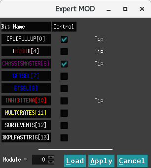
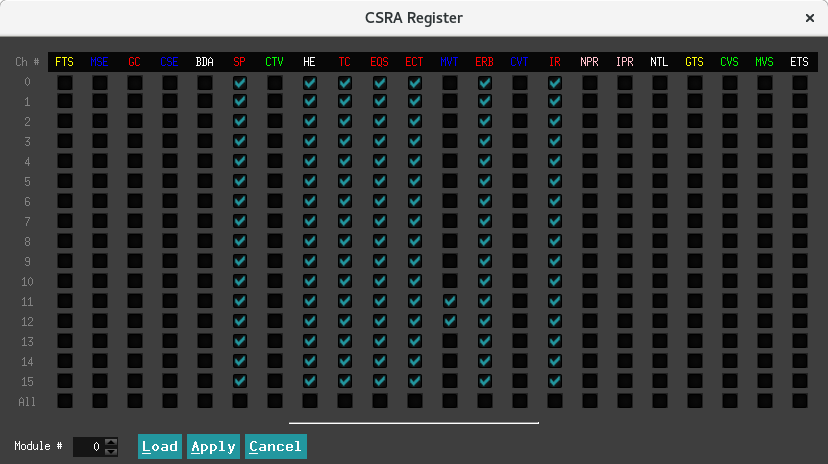

Expert¶
本下拉栏中调节内容为高阶内容，需要对获取逻辑有一定基础的人学习掌握。
Module Variables¶
控制界面¶
除了分配全局时钟信号(global clock signal)外，Pixie-16 后方 I/O 触发模块还可以共享全局触发并运行同步信号。 全局触发信号包括全局验证触发(global validation trigger)和全局快速触发(global fast trigger)，以及 Pixie-16 FPGA 数据存储缓冲器的满标志信号。 运行同步信号包括可以在多个机箱之间共享的同步运行开始和停止信号。
为了能够分配此类全局触发器和运行同步信号，必须正确设置某些 Pixie-16 参数。 控制触发器分配和运行同步的参数是模块控制寄存器B（ModCSRB）。
ModCSRB 是一个 32 位参数，其中 32 位中的每个位控制 Pixie-16 模块的不同操作模式。
注解
触发分配和运行同步
对于安装在主机箱中的 System Director 模块，ModCSRB 的位 0、4、6 和 11 应该设置为1（选中并启用）。
对于从机箱中安装的 master 模块，应将 ModCSRB 的位 0、6 和 11 设置为1（选中并启用）。
对于安装在从机箱和主机箱中的常规模块，ModCSRB 的第 11 位应设置为1（选中并启用）。
寄存器定义¶
模块控制寄存器B 作用于整个模块。
- bit 0 - MODCSRB_CPLDPULLUP
通过板载 CPLD 为背板上的 PXI 触发线启用上拉（pullups）。
使用上拉时（pullups），这些PXI触发线默认为逻辑高电平状态。
仅当一个模块主动将线拉至逻辑低状态时，该线才会处于低状态。
因此，通过这些 PXI 触发线传输的信号为低电平有效信号。
注意：每个机箱仅对一个模块启用此位（例如机箱主模块）
- bit 4 - MODCSRB_DIRMOD
将此模块设置为 Director 模块，以便它可以通过后 I/O 触发模块向所有机箱发送触发，波形和事件头 DPM 满信号并运行同步信号。
这里的触发包括快速触发和验证触发
注意：仅对所有机箱中的一个模块启用此位（例如，多机箱配置中的 System Director 模块）
- bit 6 - MODCSRB_CHASSISMASTER
将此模块设置为机箱主模块，以便它可以将触发，波形和事件头 DPM 满信号发送并运行同步信号到本机箱的背板。
这里的触发包括快速触发和验证触发
注意：每个机箱仅对一个模块启用此位（例如机箱主模块）
- bit 7 - MODCSRB_GFTSEL
选择外部快速触发源（=1：外部验证触发，=0：外部快速触发。用来在 Pixie-16 前面板输入连接器上交换这两个信号）
- bit 8 - MODCSRB_ETSEL
选择外部验证触发源（=1：外部快速触发，=0：外部验证触发，用来在 Pixie-16 前面板输入连接器上交换这两个信号）
- bit 10 - MODCSRB_INHIBITENA
启用（=1）或禁用（=0）使用外部 INHIBIT 信号。
器用该功能后，处于逻辑高电平状态的外部 INHIBIT 信号将阻止运行开始，直到该外部 INHIBIT 信号变为逻辑低电平状态。
- bit 11 - MODCSRB_MULTCRATES
将此模块设置为以多机箱模式（=1）或以本地机箱模式（=0）运行。
如果模块以多机箱模式运行，它将使用波形和事件头 DPM 满信号以及运行同步信号，这些信号是在多个机箱中生成和分配的。
如果模块以本地机箱模式运行，它将使用波形和事件头 DPM 满信号并运行在本地机箱中生成的同步信号。
- bit 12 - MODCSRB_SORTEVENTS
在将事件存储在外部 FIFO 中之前，根据事件的时间戳对来自 Pixie-16 模块的所有 16 个通道的事件进行排序（=1）或不对事件进行排序（=0）。
注意：所有 16 个通道必须具有相同的 DAQ 参数设置才能使用此功能
- bit 13 - MODCSRB_BKPLFASTTRIG
启用（=1）或禁用（=0），将 16 个本地快速触发发送到机箱背板上的 16 条线路。
注意：机箱的每个 PCI 总线段（bus segment）中只有一个模块可以启用此选项（不限于机箱主模块，例如，每个 PCI 总线段中的任何模块）
CSRA¶
控制界面¶
- 黄色 FTS、GTS 组合来选择 channel fast trigger：
两个均不选时为 local fast trigger
选择 FTS 时为 latched module fast trigger
FTS 不选、GTS 选上时为 latched channel validation trigger
- 蓝色 MSE、CSE、MVT、CVT 用来选择 module/channel validation trigger：
MVT 为是否开启 module validation trigger
CVT 为是否开启 channel validation trigger
MSE选择 module validation trigger 来源于 System FPGA 还是前面板 module GATE
CSE选择 channel validation trigger 来源于 System FPGA 还是前面板 channel GATE
- 粉红色 NPR、IPR 组合选择 pileup 事件的处理：
两个均不选时则记录所有事件，堆积事件能量值为无效
NPR 选择 IPR 不选时不记录堆积事件
NPR 不选 IPR 选择时堆积事件记录波形、不堆积时候不记录波形
两个均选择时只记录堆积事件
- 绿色CTV、CVS、MVS用来选择module/channel veto：
MVS 选择 module veto 来源于前面板 module GATE 还是 module validation trigger
CVS 选择 channel veto 来源于前面板 channel GATE 还是 channel validation trigger
CTV 为是否开启 channel trigger veto
- 红色为基础设置
黑色 NTL 是否保留超出量程的波形
黑色 ETS 是否记录外部时钟的数据
剩余的BDA不选，HE不管
寄存器定义¶
通道控制寄存器A分别用于每个通道
- bit 0 - CCSRA_FTRIGSEL
通道快速触发选择（=1：系统 FPGA 的模块快速触发； =0：选择取决于另一位的值 CCSRA_GROUPTRIGSEL：如果CCSRA_GROUPTRIGSEL=1，则选择系统 FPGA 的通道验证触发，如果 CCSRA_GROUPTRIGSEL=0 ，选择此通道的本地快速触发）
- bit 1 - CCSRA_EXTTRIGSEL
模块验证触发选择（=1：来自 Pixie-16 前面板模块门 LVDS 连接器的模块门输入； =0：来自系统 FPGA 的模块验证触发）
- bit 2 - CCSRA_GOOD
将此通道设置为 “好” 通道（=1）或 “不好” 通道（=0）。
当某个通道设置为 “不好” 通道时，它仍会生成本地快速触发，可用于多重性计算等，但是此通道不会记录列表模式数据或 MCA 数据，并且不会更新其基线数值。
- bit 3 - CCSRA_CHANTRIGSEL
通道验证信号选择（=1：来自 Pixie-16 前面板通道门 LVDS 连接器的通道门输入； =0：来自系统 FPGA 的通道验证触发）
- bit 4 - CCSRA_SYNCDATAACQ
选择此通道的同步数据采集级别（=1：系统中任何 Pixie-16 模块的任何通道的波形或事件头 DPM 满时，停止采集数据； = 0：仅当此 Pixie-16 模块的此通道的波形或事件头 DPM 已满时停止采集数据）
- bit 5 - CCSRA_POLARITY
选择此通道的输入信号极性（=1：反转输入信号的极性； =0：不反转输入信号的极性）
请注意，在 Pixie-16 中，信号处理需要正上升输入信号。 因此，如果输入信号具有负下降沿，则应通过将此 CCSRA_POLARITY 位设置为 1 将其反相
- bit 6 - CCSRA_VETOENA
启用（=1）或禁用（=0）此通道的否决（veto）。
如果启用否决，则该模块的否决信号（请参见下面的位 20 CCSRA_MODVETOSEL）或通道否决信号（请参见下面的位 19 CCSRA_CHANVETOSEL）将否决该通道的快速触发
但是，如果否决被禁用，则即使存在任何一个否决信号，该通道的快速触发也不会被任何一个否决信号否决
- bit 7 - CCSRA_HISTOE
启用（=1）或禁用（=0）板载 MCA 存储器中脉冲能量值的直方图。
但是，当前的 Pixie-16 固件始终会对板载 MCA 存储器中的脉冲能量值进行直方图绘制。
因此，此 CCSRA_HISTOE 目前基本上未使用
- bit 8 - CCSRA_TRACEENA
在列表模式下为此通道运行启用（=1）或禁用（=0）波形记录
- bit 9 - CCSRA_QDCENA
启用（=1）或禁用（=0）列表模式下为此通道运行 QDC 积分记录
每个事件共有 8 个 QDC 积分
- bit 10 - CCSRA_CFDMODE
在列表模式下为此通道运行启用（=1）或禁用（=0）CFD 触发
CFD 触发用于锁存事件到达时间或时间戳的亚采样时间
- bit 11 - CCSRA_GLOBTRIG
启用（=1）或禁用（=0）此通道的模块验证触发的要求
如果启用，则仅当模块验证触发与通道快速触发重叠时，才会记录该通道的事件
- bit 12 - CCSRA_ESUMSENA
启用（=1）或禁用（=0）以列表模式为此通道运行原始能量总和及基线值的记录
每个事件共有三个原始能量总和及一个基线值。
请注意，基线值以 32 位 IEEE 浮点数（IEEE 754）的格式存储
- bit 13 - CCSRA_CHANTRIG
启用（=1）或禁用（=0）此通道的通道验证触发的要求
如果启用，则仅当通道验证触发与通道快速触发重叠时，才会记录该通道的事件
- bit 14 - CCSRA_ENARELAY
通过输入继电器在此通道中的输入信号的两个衰减或增益之间切换（=1：关闭输入继电器，不会导致输入信号衰减; =0：打开输入继电器，会导致输入信号衰减为1⁄4）
- bit 15/16 - CCSRA_PILEUPCTRL/CCSRA_INVERSEPILEUP
控制列表模式运行的正常堆积拒绝（位15）和反向堆积拒绝（位16）：
位 [16:15] = 00，记录所有事件
位 [16:15] = 01，仅记录非堆积事件，即拒绝堆积事件
位 [16:15] = 10，记录堆积事件的所有内容，但即使启用了波形记录，也不会记录非堆积事件的波形，即仅记录事件头
位 [16:15] = 11，仅记录堆积事件，即拒绝非堆积事件
在所有情况下，如果事件堆积，则不会为该事件计算能量
- bit 17 - CCSRA_ENAENERGYCUT
启用（= 1）或禁用（= 0）“no traces for large pulses”功能
启用后，如果事件能量大于 DSP 参数 EnergyLow 中设置的值，则不会记录跟踪
- bit 18 - CCSRA_GROUPTRIGSEL
选择通道快速触发，此位与 CCSRA_FTRIGSEL 位（位0）一起使用：如果 CCSRA_FTRIGSEL=1，则此 CCSRA_GROUPTRIGSEL 位无效；否则，该位无效。 如果 CCSRA_FTRIGSEL=0，则如果 CCSRA_GROUPTRIGSEL=1，则从系统 FPGA 中选择通道验证触发，如果 CCSRA_GROUPTRIGSEL=0，则选择该通道的本地快速触发
- bit 19 - CCSRA_CHANVETOSEL
通道否决信号选择（=1：来自系统 FPGA 的通道验证触发; =0：来自 Pixie-16 前面板通道门 LVDS 连接器的通道门输入）
- bit 20 - CCSRA_MODVETOSEL
模块否决信号选择（=1：来自系统 FPGA 的模块验证触发；=0：来自 Pixie-16 前面板模块门 LVDS 连接器的模块门输入）
- bit 21 - CCSRA_EXTTSENA
在此通道的列表模式运行期间，启用（=1）或禁用（=0）事件头中的 48 位外部时钟时间戳的记录